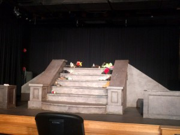
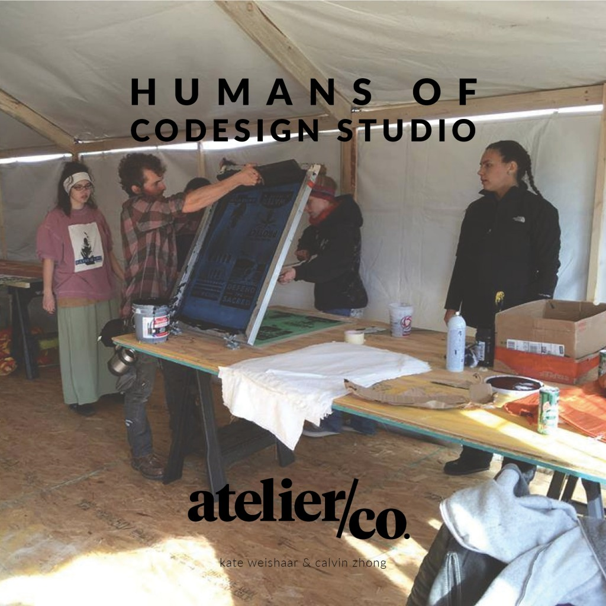
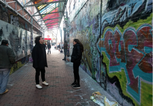

I interviewed Andrea Atkinson from One Square World. Andrea is the executive director at One Square World and organization that works with members of the community by adding them to the development process in communities. https://drive.google.com/drive/u/0/recent (link to recording)
Interview with Alex from City Life/Vida Urbana — “The Community Gains Control of Their Community”

Just a week ago, I was able to visit the site of City Life/Vida Urbana in Jamaica Plain. City Life is a grassroots community organization created to fight for gender equality and racial, social, and economic justice by building up the working class’ power. The group has many goals, but the most universal aspiration was guaranteeing that each person has the right to food, housing, health care, education, meaningful employment, and most importantly, the right to exist in freedom without fear of displacement or deportation. After briefly exploring the welcoming space of the organization, I got to sit down with Alex Ponte-Capellan, a community organizer for City Life.
We were able to a lot about the work he does at City Life. As a community organizer, Alex follows cases that arise in the Jamaica Plain/Roxbury area. Alex’s work is centered around helping tenants with whatever they need while negotiating with their landlords, joining tenant associations, and getting in touch with lawyers. Of this work, he finds that the biggest challenge is getting people to get involved. Often all the tenants in a building get a notice to quit accompanied with a lease revealing a higher rent. Under these circumstances, a few tenants get very interested in City Life’s help, but many others will be very uninterested. This may be because these tenants do not feel directly threatened by these actions, and they are waiting for that moment of urgency before they take action. To get around this, Alex said he generally remains persistent, sending emails and calling each of the tenants, trying to give each person their best chance at maintaining their current lives.
Some triumphs City Life has made in their cause include a march which was held last week on Saturday. The tenants in the 26 School Street Tenant Association, have been facing really high rent increases, so in order to instigate landlord negotiations, City Life held a rally down Washington Street and amounted quite a bit of communal support and media coverage. Alex is currently hoping these effort result in a settlement, which seems promising from the event’s popularity. Another success occurred when Alex first joined City Life. An investor was attempting to buy out a property from a landlord with more financial power than City Life could establish and provide. However, City Life’s legal team collected the tenants’ claims against the previous landlord, which totaled in millions of dollars in payments. City Life’s deal would be to buy out the property with their initial price offered and drop all of the claims on the landlord, which was a monetarily better settlement than what had been offered by the investor.
We also got to talk more about how Alex got involved with City Life. A large deal of influence came from his experiences with the Prison-Industrial Complex. His desire to create change lead to a grassroots youth activist group called Young Abolitionists. This lead him to explore gentrification, eventually hearing of City Life and joining the group. Nevertheless, some of the most life-changing events in Alex’s life were the moments just after his cousin passed away. This very emotional moment touches him to this day, still guiding some of his life decisions. To provide the help Alex wasn’t able to provide his cousin before his untimely death, he channels his effort into his work at City Life — he tries to give others their best lives since his cousin was robbed of his.
Alex has many idea in order to progress City Life’s cause, but he also has advice for the community and how we all can be involved in the problem of gentrification and displacement. Alex suggested that people can get in contact with local officials, and join in rallies/marches for social change in their area. Above all, it’s important to stay informed of the issues around us and be active members of our community.
Featured Audio: https://drive.google.com/open?id=0B2NhJ7UxMYutWlJwODk1Wl9aNU0
Interview with Juan from ZUMIX
I interviewed Juan from ZUMIX, who is a senior attending East Boston High School. Juan has been at ZUMIX for the past couple years, during which he has been in several of the youth programs: Voces, Rock Ed, and Radio. Each of the programs has added to his knowledge of music and sound production; Voces was focused on singing and Rock Ed involved learning the electric bass as part of a rock ensemble. Radio, which he is currently in, has taught Juan how to use editing software to create polished radio segments for broadcasting on ZUMIX’s 94.9 FM channel.
As part of Radio, Juan and the other students in the class have been conducting interviews of East Boston residents affected by gentrification. Juan had been unaware of the magnitude of the problem before Radio; interviewing residents who have been summarily and unlawfully evicted by landlords has given him immediate insight on the circumstances of those around him, especially fellow students at East Boston High School. Juan plans to continue to conduct interviews as part of his work in the Radio program, and hopes to both learn more about gentrification and to spread awareness on how it is harming his neighborhood.
When asked to sum up his experiences at ZUMIX, Juan simply exclaimed “I love it!” He attributes this response to the people there, especially the teachers of the programs that he’s been in. After Juan graduates this year, he will continue to use the skills that he’s learned at ZUMIX, first at his anticipated job as a receptionist, and eventually at his dream career as a radio interviewer.
Social Justice Hackathon Missed-Class Makeup Blog Post
A lot of effort as been made to make hackathons across the country more inclusive, equitable, and aligned with social justice. One important aspect of hackathon social justice is women’s rights and the need for equality in the tech industry. A typical hackathon will only have about 20% women which is very far off from a 50/50 goal. However, there have been efforts made and strategies layed out in order to achieve more equality like prioritizing women in hackathons, setting clear goals, identifying key roadblocks, and incorporating men. With the use of many of these strategies, people were able to organize many women focused tech events like the AngelHack in Gaza and future hackathons like the Women Who Code Hackathon which will be taking place in late July of 2017. The goal of these events is to obviously incorporate more women into hackathons, but the main strategy they use is to spread the word about gender equality and give women more confidence to work in the tech industry.
Mr. Joy @ Zumix Firehouse Theatre
Today, I watched Mr. Joy, a play hosted by Arts Emerson and on performance at Zumix Firehouse Theater.
{kind=link}
Mr Joy is a one-woman show written by Daniel Beaty, starring Adobuere Ebiama. The Zumix website describes it as this:
A Harlem community is shaken when Mr. Joy, a Chinese immigrant whose shoe repair shop has been a neighborhood pillar for decades, is the victim of an attack…[sic] Mr. Joy invites us to consider how we respond to violence as individuals and as a community, and the power of the invisible ties that bind us all.
More info here: http://www.zumix.org/community/events/mr-joy-east-boston
The Show
The sun was streaming through the tall Firehouse windows when we got there. My friend and I were ushered in by a Zumix high schooler named Angelina. The seats were about 80 percent full, and the audience members were a range of ages—from teens, to what I would guess would be 60s. A mix of ethnicities too.
Two Zumix emcees gave a quick intro, asked who in the crowd had come to Zumix events before. A few hands went up; most of us were here for the first time, and heard via word-of-mouth. The tone of the event invited relaxed participation; the emcees encouraged us to talk back to the performer and stay for a discussion after.

{kind=link}
The set & costumes were minimal, and didn’t change throughout the whole play.
Adobuere Ebiama blew me away with her performance—she moved seamlessly about 7-8 characters in a 90 minute performance, without intermission. She captured each of the character’s nuances beautifully, from the way they spoke, moved, and interacted with the set. Three Zumix youth were also in the back of the room, controlling the sound and lighting.
The performance had everyone laughing, crying, and jumping to their feet by the end of it. Angelina and Jeeyoon (the program manager) came on-stage and followed up with a set of questions:
-
Throw out one word, any word, that described what you felt from the performance. (“Responsibility!” “Hope!”)
-
What parts of the play resonated with you personally? That you could relate to?
-
What actions, big or small, do you feel like you can offer up, that you could extend into your community? It could be as simple as having a conversation that might be uncomfortable, or something bigger.
The discussion centered around the meaning of home, displacement, and how communities evolve. The audience members were warm and supportive, nodding emphatically, snapping, and even applauding after someone shared their thoughts. Really gave me a feel for the kind of communities & conversations around the Zumix space.
The Tour
Jeeyoon took us around for a tour of the building after, and we had a great conversation about the curriculum and Zumix’s vision. A few things that stood out to me:
- Zumix events are free. Zumix is well-aware of many barriers, whether financial, social, or age that might bar young people from even seeing their teachers perform at local venues. They try to invite teachers to play in-house because it makes the students’ practice seem “much more real.”
- Students really own their music and their classrooms. There were group code-of-conducts in every single room, which Zumixers write up and sign together. Students might also produce an entire CD that “an adult hasn’t touched at all.”
- Reactive curriculums. They emphasize adapting curriculums to student interests, and giving the student ownership over steering the class.
- Emotional support & growth. Jeeyoon described her close relationship with Angelina, who is involved in about 5 performance-related extracurriculars. It moved me how Jeeyoon was so invested in her best interest: “We really talk a lot… I didn’t want her to burn out.” We agreed that we were all impressed by the social awareness, public speaking skills, and vision of Angelina and her peers.
The show is playing again this Thursday and Friday, in the Strand Theater in Dorchester. You can get tickets here. The event was profoundly moving and I really encourage folks to go see it! I would be curious to hear how other organizations/venues present it.
Audio Go
Audio Go – Aveen Nagpal, Alex Jin, Natalí Espitia
Presentation: https://docs.google.com/presentation/d/1M-l1VuHqX15lfWuDNVQe92DIDZks5j3z5jnetgPMNjw/edit?usp=sharing
Audio Clip: https://soundcloud.com/alexander-jin-837384517/joddy-interview
Our group thought it would be a good idea to make an audio tour app that would work similarly to the PokeStop feature on Pokemon Go. The app would be used to locate different significant locations around the city that would feature an interview with an activist. We believed this would be a fun interactive way to listen to the interview clips while also taking a tour around Boston that highlights significant events, struggles, or organizations in the area that people may not be aware about.
We met at the Cambridge Public Library to divide work and come up with more ideas for the app including the design and layout. We decided that we wanted a simple design with few “extras” that would distract from the main features of the app. The loading sequence would alternate between logos for our different schools and organizations. The main screen would be a map with a green icon at the bottom left that you can click to reach the interviews.
The page with interviews would have a photo of the location as its background with a small image of the activist interviewee at the top that you can click to play the interview. Below the interviewee image will be text of the audio so that the app is inclusive to those that are hard of hearing.
One challenge we encountered was splitting work fairly since Aveen is the only one in our group who knows how to make an app. Our biggest challenge, however, was finding a time to truly work together since we come from different schools/locations and have to work around three very different schedules. For this reason, a majority of our work was done through text. We believe our work would have been much easier and ideas would be more efficiently shared had we been able to meet during class time which we all had set aside.
Moving forward, we will finish collecting images for the app and meet with a professional app developer to work out different bugs and improve design. We also hope to incorporate a bigger element of discovery into the app. Perhaps one way we could promote interest in the app as well as increase how interactive it is would be to allow people to submit their own interviews with area activists which would increase visibility for these activists in addition to increase the number of interviews one would encounter on their normal walk around the city.
Activits of CoDesign: A HONY-Inspired Project
Links:
Presentation: http://ca.lvinzhong.com/AtelierCo/0405_AtCo.pdf
Audio Sample: http://ca.lvinzhong.com/AtelierCo/Audio_Compilation.mp3

{kind=link}
Cover Image from Salvador
We (Calvin + Kate) are Atelier Co. (a semi-tongue-in-cheek reference to our Architecture backgrounds). Our project draws inspiration from the Humans of New York project, a series that shares photos of New Yorkers along with their personal stories in a concise and accessible format. The project began online but has spread to a book form as well. We wanted to use this method of spreading different perspectives to spread ideas that really matter to people in the Boston area.
With this goal in mind, we collected the audio interviews, blog posts, and photos posted by members of this class, and we organized them into folders that could be accessed by our code. We then developed a simple, modern template based on the HONY aesthetic to feature our organized content, focusing on the interviewee’s name and image with the audio and text underneath. Finally, we wrote the code needed to fill the template with our content and create an interactive online book.
We chose to make an online book because it provides an easy way to reach many people very quickly. The book can be accessed during someone’s commute, when they have time to listen to long interviews, or at home when they may just want to flip through the pages and skim the blog posts. Either way, they would find a clean, simple interface that keeps the emphasis on the content. This book could be accessed via a standalone url, which could be linked via Facebook, Twitter, and other types of social media. We could also feature specific pages on social media in a style closer to the original HONY posts.
Our eventual goal with the project was to create a physical book that plays the different interview recordings as the pages are turned. While this is not as easy to access whenever it’s convenient for the user, it would provide an interactive and informative element to physical exhibitions like those proposed by Urbano. Because we have very limited experience designing electrical projects, we decided to stick with a virtual book for now, refining a design that could then be transferred to physical form should we connect with a mechanical or electrical engineering student later on. The physical book would also be more suited to short audio clips instead of the half-hour long interviews most people posted, so it would require more time to edit these as well.
Based on the feedback, we looked into Articulate Storyline as a more efficient way to produce our virtual product. While it looked like the sort of software that could potentially meet our needs, it cost several hundreds of dollars to acquire if we wanted to project to be modifiable beyond the free trial period, so we chose to stick to coding it ourselves. Though our code may not be accessible to people without a working knowledge of Javascript, it provides a good framework that can be adapted by experienced programmers. These adaptations could include things like connecting the site to another website that allows users to easily upload files. Our code is based on a simple numbering system with folders for each file type, so it would be very clean and easy to expand the file collection.
That being said, we have struggled with Javascript and integrating our functionality with our design. For our next steps, we hope to debug the final version to make sure all the buttons work properly and refine the code to adapt to mobile devices. This project has the potential to be a great interface for enjoying podcast-like content, so we hope to improve our design so that it is both beautiful and easy to use on a variety of devices.
Peas in a Podcast
Peas in a Podcast – Community Comments Presentation
Peas in a Podcast: Ingrid Henderson, Kobbie Ofori-Atta, and Tabia Smith
A few weeks ago, our peers (ourselves included) interviewed a diverse array of youth activists. Hearing each of these stories, we wanted to create a way in which the words of all these activists could be presented to the community. We brainstormed means in which we could create a product that would be accessible to the whole public, present the stories of the activists clearly as they intended, and easily sharable to friends and family. Our final idea was our podcast, Community Comments.
In order to create the prototype for our podcast, we first needed to listen and analyze already established podcasts. For example, we listened to This American Life, Radiolab, and TED Radio Hour to understand the concept of narrative journalism — this is the style in which we were conducting our podcast. After gleaning a sense of the formula and flow of how our podcast should sound, we started our construction process.
To do this, we first listened to a few of our classmates’ interview, taking key and interesting sections of each clip. Based on these snippets and some background information of the each activist being interviewed, we conducted research to present statistical facts and other relevant figures which the interviewee wasn’t able to state. We later wrote a simple outline structure detailing what we were going to talk about in each segment of our podcast, and when were to play a section of audio for context. Finally, we recorded our whole podcast, editing in the original audio of the interview where it applied — we used GarageBand to help with the overall sound quality, and the audio effects added to the opening of the podcast. We uploaded our final podcast prototype to SoundCloud where we will have a Peas in a Podcast account for all of our podcasts to be listened to and/or downloaded.
We came across a few challenges as we starting putting things together. For instance, throughout the script-making process, we found it difficult to find strong connections between audio segments to seamlessly connect them with our comments and banter. Likewise, it was also difficult to find and edit down the valuable parts of each interview to best capture the interviewee’s aspirations, because we want to make sure their message is clear and their beliefs are portrayed like they intended.
After our class presentation, we got some much needed feedback to improve our production process. We really liked the idea of making our podcast more of a participatory process. We would do this by asking our interviewees which sections of the interviews they felt were most important. Depending on their response, we would take this into account when structuring our podcasts. The process could become even more participatory if we collaborated with our interviewees during the actual editing process, by teaching interviewees how to use video and sound editing software, and giving sample podcast introductory scripts for users submitting stories. This would give each topic more style from sound effects to structure. We also would add text submissions as an option to make our podcast even more accessible. These submissions would be read by one of us when recording a podcast.
We also like the idea to make our podcast more public. We could both gain viewers and raise awareness on our interview topics if we held live interviews for our podcast. Collaborating with a group like Zumix, or even a campus radio show (like Wellesley’s WZLY), would create a more public platform. The interviews would become even more public if we held live shows in public spaces — possibly allowing us to attract a more diverse demographic (perhaps older people, those not usually involved in activism).
Team Rainbow, Prototype 1
Team Rainbow is Sam, Jade, Aditi, & Kathy.
Our interviews were all sourced from the Boston/Cambridge area; this inspired our team to create a place-specific installation. Our aim with this project is to reveal the voices of Boston area youth activists, whose work and ideas might ordinarily go unnoticed by local strangers. The audio clips answer questions like, “What does the 2030 future look like, ideally?” and “How will we get there?” All questions that these people can answer with a sense of imagination, logic, and hope.
The tone of the audio tracks is optimistic and action-oriented. For instance, Gabby Ballard of MIT urges people to have conversations. In her interview, she notes,
“We have to educate ourselves… Privilege comes in many different ways. Having these conversations come with being open to your own vulnerabilities. Giving people room to make mistakes. Even if you are offended and angry.”
Our team initially banded together because we were all interested in creating a site-specific installation. We chose the Graffiti Alley in Central Square, Cambridge, because of how inspiring it is as a site of community conversation.

People walk by the space during all hours of the day; it’s very visible and is constantly updated, painted over, and admired. We noticed how thick the spray paint was– you could peel off parts and still, you would be more than a centimeter from the underlying brick. Having a space where a variety of people walk into is important to our goal for our project. We want diverse responses and ideas in order to send messages to the public; what is really important in the world? Or, what means the world to one individual?
For us, it was important that we created dialogue, instead of just passive listening. For this reason, Central Square also seemed like the perfect location. During our first meeting, we explored the site. We noticed how frequently people came through, and we discovered funny artifacts hidden in the walls.
{kind=link}
We got excited when we saw these small, sculpted faces embedded in the wall– something you normally wouldn’t see if you were walking through quickly. We thought, What if they spoke to you as you passed? We could invite people to slow down, listen, and be curious.
With this form factor, we could reinforce that these voices came from local people who shared the same city spaces as you. We imagined many more faces— planted along the walls at various heights, so that many ages and differently-abled people could hear easily. Initially, we were interested in creating molds of young childrens’ faces, to echo our theme of “building 2030 futures.”
{kind=link}
Our first prototype is mounted on a 19” plywood disk, which would be accompanied by a Sharpie to invite people’s thoughts and responses. We used a plastic party mask and Bluetooth speaker to simulate the “talking heads” effect we wanted.
If we were to continue this project, we would test our prototype in the space itself. How might people react to it? How would people want to dialogue with the piece, and would they feel comfortable writing or drawing? In the future, we would love more realistic face molds that represent the diverse demographics of our city.
Project ARt
Project: ARt
By Adesewa Adelekun, Christina Y He, Jacquelyn Liu, Carolyn McKenzie
Context
Salvador Jiménez-Flores and Urbano worked together to develop an interactive, multi-purpose, movable sculpture titled “¿Cuándo y Dónde?”, or “when and where.” The sculpture was designed to be multi-purpose engaging the community through performance, social interventions and youth-led workshops. In its next iteration the nomadic sculpture will be exploring ways to integrate audio into continued mission of collaborative and interactive artwork from and for the Eggleston community.
http://urbanoproject.org/civic-sculpture
We propose blending Cuando y Donde with Augmented reality to create ARt.
Augmented Reality gives us the opportunity to bring components of the digital world into the user’s perceived reality. 3D models, images audio and videos can overlay the user’s view of the world in real time. This allows both the media and the physical space to become interactive and malleable.
We prototype our AR idea with with 30 second clips and visual representations of our interviews.
Approach
AR allows for sharing and discovering experiences particular to a place and time. Using AR, we can create a way for Urbano students and locals to audio-record their stories or thoughts in response to a prompt. The recording is stored on a server, associated with an image of their choosing (or of their making), accessible through an AR interface. That image is printed as a sticker and tagged. They leave the “AR studio” box with stickers to place on the map or distribute wherever they wish around the neighborhood or city
The project will culminate in a geographical map of the Boston area, presented as a poster that can be posted on the outside surface of the AR studio or just hung up around town.
AR interface: scanning these elements on the map using a smartphone camera to unlock details about the interviews
-
Mp4 audio clips
-
Images
-
Information about the interviewee
Challenges & Lessons
Limitations of software
-
Confined to widgets
-
Clunky and made for marketing (not using it for marketing)
-
Freemium
We recognized a general lack of tools for non-experts to work with AR.
Confining a full interview to 30secs was difficult in terms of staying true to the fullness of the story vs. working to the attention span of your audience. However, we somewhat ameliorate this by adding links to resources for additional information. There is definitely a treasure-hunt-ish aspect to this.
Next Steps
-
Test print stickers of scannable elements and research ways to do this
-
Create a range of simple sticker graphics, which members of the Urbano community could use as Layar elements, containing their own content (audio recording, links, images etc.)
-
Explore logistics of creating an AR creator space in the Urbano box:
-
A mini recording studio? Can participants design their own sticker?
-
Drawings on sticker paper (more accessible, but can not produce many of the same sticker since it’s handmade) vs. digitally designing the printer and sticking (requires design software and printer but people can make multiple of the same sticker so they can put one on the Urbano map and stick others wherever they like
-
Companion website?
Class Feedback
Feedback:
– Perhaps integration with Vojo
– Is it important to teach viewers to use Layar authoring environment or simply participate through listening, storytelling, etc.? Some classmates suggest QR instead.
– How is it discoverable without a label? How would folks know to download Layar? What happens when Layar goes out of business? – Maybe QR code with link to download app / open within app if installed
– Don’t want the project to be an ad for Layar (not a perfect tool). QR codes / website might be a way to increase access to those with internet but not smartphones
– What’s the value added by doing this? It seems to be a way of tagging content rather than AR. Does it make more sense to embed QR code into other design elements? — but then Layar is worth trying out because there’s something interesting about your smartphone recognizing a shape. It’s hard to explain the user experience verbally, but it is kind of like a treasure hunt.
– What would the process be to create your own sticker? Layar offers the possibility to draw a sticker (vs print) and scan the object. People can participate in the creation of stickers that would then get pasted on computers, maps, etc.
You can either design the sticker digitally and print it (would require a sticker printer) or let participants draw stickers on sticker paper first, then scanned into Layar. (It was also suggested to use a QR sticker that people can draw AROUND but this might take away from the artistic/aesthetic aspect of our project.)
– Do you need to pay to publish the Layar project?
YES. Apparently there used to be free publishing, but this feature has been removed. Individual pages are about four USD. This is what it says on the Layar site FAQ:
“Yes, there is no longer a method for free publication. New users are given 2 free Basic pages at sign-up as a way to test the Layar Creator. However, we do still offer discounts for students, teachers, schools, charities and other non-profit organizations.”
There is a way of testing out the AR capabilities when you’re editing, and I think Layar will only recognize the poster if you have it pulled up in “editing” mode on some computer. I’m assuming there is some kind of time-out that happens once you are not editing mode, where it will stop recognizing the poster.